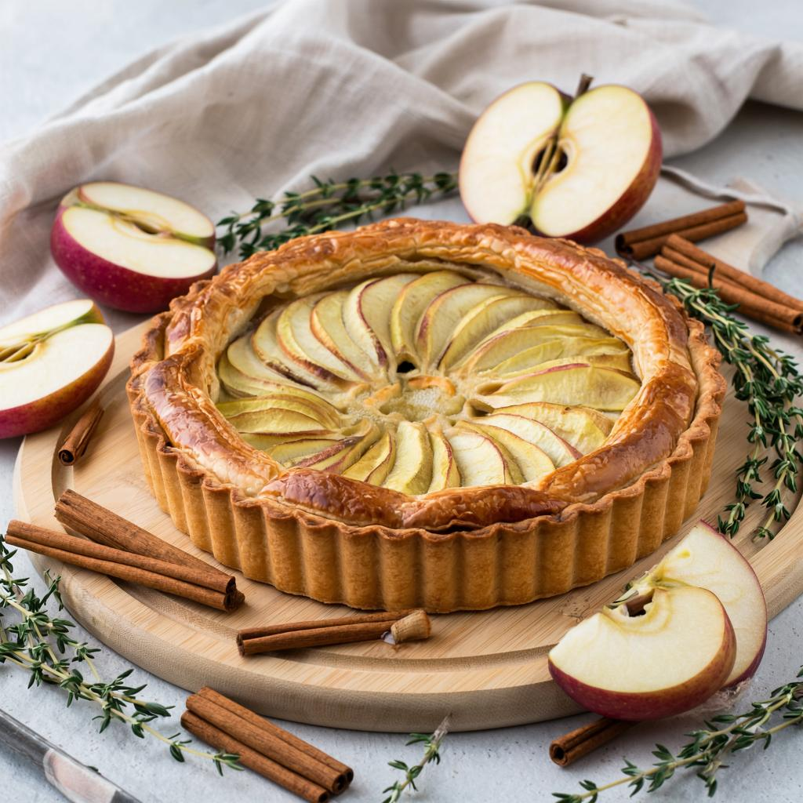

French apple tart

For the tart dough
-
6 tablespoons (3 ounces, 85g) unsalted butter, cubed, at room
temperature
- 1/4 cup (50g) sugar
- 1 large egg yolk
- 1 cup (140g) flour
- 1/8 teaspoon salt
For the filling
- 4 medium apples, (see headnote), about 1 1/2 pounds 700g
- 2 large eggs
- 1/2 cup (100g) granulated sugar
- plus 2 tablespoons granulated or raw cane sugar
For finishing the tart
- 4 medium apples, (see headnote), about 1 1/2 pounds 700g
- 3/4 teaspoon vanilla extract
- pinch of salt
- 1 cup (250ml) heavy cream, (or half-and-half) 2 1/2 tablespoons
-
Make the tart dough by mixing the butter and sugar together in a stand
mixer fitted with the paddle attachment on low-to-medium speed, until
combined, about 1 minute. (But do not whip.) Add the egg yolk and mix on
low speed for 30 seconds. Mix in the flour and salt on low speed, until
the dough comes together. If necessary, add a sprinkle of water if the
dough feels too dry. Don't overmix it. (I often stop the mixer before
the dough is done and mix it by hand, to avoid overmixing.)
-
Shape the dough into a disk and place in the center of a 9-inch (23cm)
removable bottom tart pan. Use the heel of your hand, and fingers, to
press the dough across the bottom and up the sides of the pan, getting
it as even as possible. Refrigerate or freeze the dough until ready to
use.
-
To bake the tart, preheat the oven to 350ºF (180ºC). Peel and core the
apples, and cut them in eighths. Place the slices in concentric circles
in the unbaked tart shell.
-
In a bowl, whisk together the eggs and 1/2 cup sugar, along with the
vanilla extract and salt. Whisk in the heavy cream and calvados, until
the mixture is smooth.
-
Pour the filling over the apples in the tart dough. Sprinkle the top
with 2 tablespoons of sugar and bake the tart until deep golden brown on
top, about 45 to 50 minutes. (The tart should not leak but if you are
concerned it will, bake it on a parchment or foil-lined baking sheet.)
Remove from oven and let cool on a wire rack.
Notes
Serving: Serve the tart warm or at room temperature.
Normally tarts like this are served on their own but you can serve it with
whipped cream or ice cream.
Storage: The tart is best enjoyed the day it's made. It
can be kept up to 3 days but does not improve.
BACK